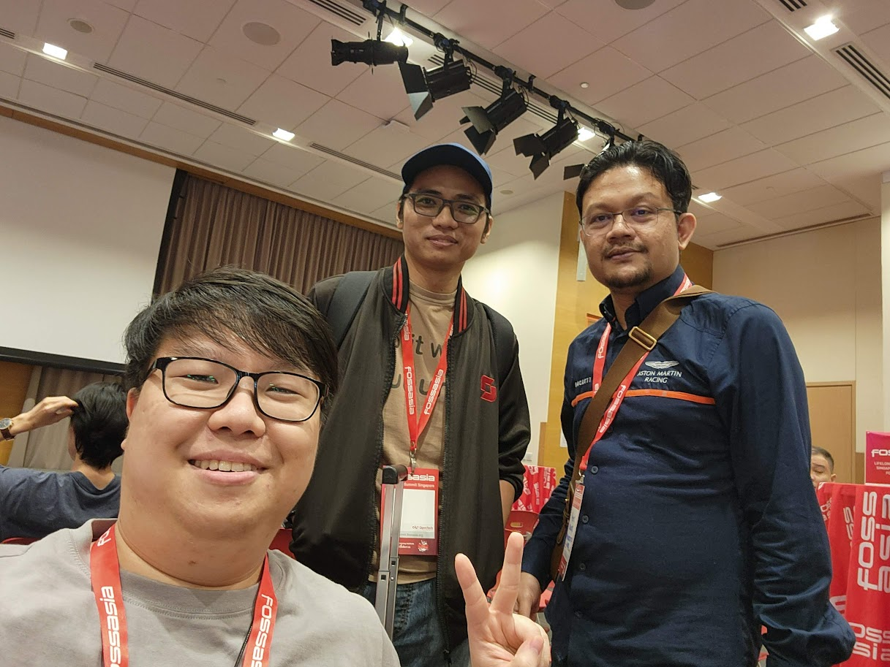
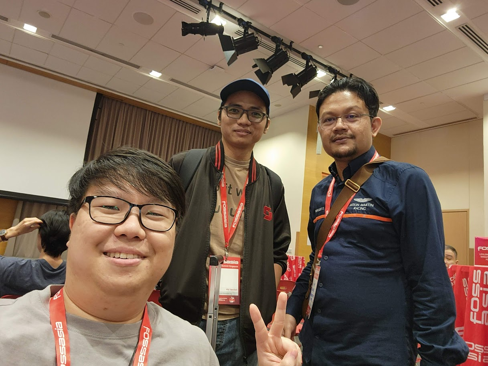
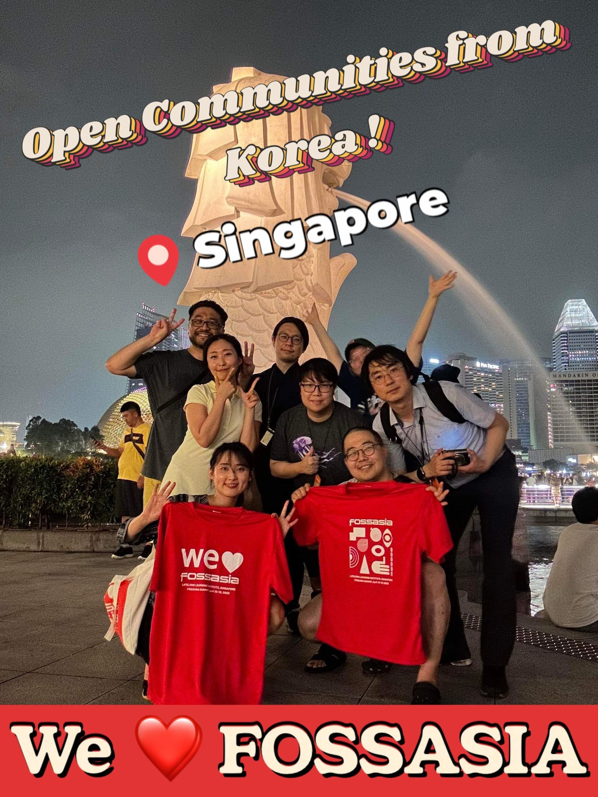

싱가포르에서 열린 FOSSASIA Summit 2023! 최근 몇년간 코로나 19로 인해 온라인으로 열리다가 올해는 오래간만에 오프라인으로 행사가 개최되었습니다. 저는 작년 온라인 행사에서 오거나이저로 참여하여, 마케팅 팀과 비디오 팀에서 활동 했었는데요. 올해 FOSSASIA 행사에는 오거나이저로 참여하지는 못했습니다. 왜냐하면 올해 FOSSASIA 팀이 만들어질 때 저는 한국에서 열리는 UbuCon Asia 2022 행사 몇주 앞두고 정신 없을 정도로 바빠서 팀이 만들어 지고 있는것도 몰랐던거 같네요. 대신 올해는 FOSSASIA를 총괄 하시는 Hong Phuc 님으로부터 한국 커뮤니티 부스를 운영해 보는 것에 대해 제안을 받고, 처음으로 해외 커뮤니티 행사에서 부스를 차려서 운영을 해 보게 되었습니다.
한국 커뮤니티 부스 팀이 만들어진 과정
원래는 한국 커뮤니티 부스가 아닌 다른 계획을 먼저 생각하고 있었는데요, 올해 초 FOSDEM 2023에서 우분투 커뮤니티 부스가 열린 것을 보고, 우분투 커뮤니티 부스가 FOSSASIA 에도 있고 운영에 참여 해 볼 수 있다면 재밌을 것이란 생각이 들어, Canonical 에 Community Team 에 연락해서 FOSSASIA 에도 커뮤니티 부스를 차리자는 제안을 했었습니다. 하지만 Canonical 측에서 FOSSASIA 에 대한 후원 절차 진행하기에 시간이 부족하여 안타깝게도 무산 되었습니다.
대안으로 Hong Phuc 님께서 한국내 여러 커뮤니티를 모아 부스를 한번 차려 보라는 제안을 해 주셨고, 이것 또한 해보면 재미있을 것 같아서 제 페이스북 타임라인에 관심있는 분들이 있는지 알아보기 위한 글을 하나 올렸습니다. 글을 올릴때는 크게 기대 하지는 않았는데, 생각보다 많은 분들께서 참여의사를 밝혀주셔서 총 4개 커뮤니티 운영진 분들이 모여 원정대를 꾸려(?) 싱가포르로 갈 수 있게 되었습니다.
한국 커뮤니티 부스 팀에는 저(우분투한국커뮤니티), 방기연 님(C++ Korea), 박동하 님(C++ Korea), Justin Yoo 님(클라우드 유랑단), 박정환 님(클라우드 유랑단, 파이토치 한국 사용자 모임), 최가인 님(클라우드 유랑단, 위민후코드 서울), 유현아 님(위민후코드 서울), 강연정 님(위민후코드 서울)께서 참여 해 주셨습니다. 원래 조민성 님(우분투한국커뮤니티)도 참여하시려 하셨으나, 개인 사정으로 아쉽게도 중간에 싱가포르에 못 가게 되셨습니다.
부스 및 세션 기획
부스와 세션(20분 분량)은 주로 각 커뮤니티의 활동을 소개하는 내용을 기획 되었습니다. 처음에는 부스에서 어떤 활동을 해야 하나 아이디어가 잘 떠오르지 않거나, 아이디어가 조금 있어도 확신이 있지는 않았습니다. 그러던 중 FOSDEM 2023 에서 대만 커뮤니티 부스가 운영 되었었던 것을 발견해서, 해당 부스 기획과 운영을 주도했던 OCF(Open Culture Foundation)측에 부스를 어떻게 운영 했었는지 문의 하였습니다. OCF 측의 Singing Li 님께서 친절하게 당시 각 참여 커뮤니티별 활동 소개와 행사 홍보에 초점을 두고 운영 했었다고 회신 해 주셨고, 이를 참고하여 부스를 기획할 수 있었습니다.
이렇게 하여, 각 참여 커뮤니티의 활동을 소개하는 방향으로 기획이 진행 되었고. 부스에서 사용할 스탠딩 배너와 리플렛 디자인 및 주문도 진행 되었습니다. 배너에는 각 커뮤니티 로고와 Linktree 로 만든 통합 소개 페이지(현아님께서 제작 해 주셨습니다.) 링크가 연결된 QR 코드를 넣었고, 리플렛은 전면에 커뮤니티별 로고와 QR 코드를 후면에는 각 커뮤니티 소개를 넣어 디자인 하였습니다. 기연님, 동하님께서 디자인과 주문 및 싱가포르 현지까지 가져오는 데 많은 수고를 해 주셨습니다.
세션은 총 20분 분량으로, 각 커뮤니티가 5분씩 소개를 하는 형태로 준비하였습니다. 작년 온라인 FOSSASIA 행사 때, 우분투한국커뮤니티와 위민후코드 서울에서 5분 라이트닝 토크를 통해 커뮤니티를 소개하는 시간을 가진 적이 있었어서, 이를 참고하여 세션을 준비하게 되었습니다.
싱가포르 도착! - 발표 준비와 부스 설치
부스 운영에 참여하는 운영진 분들 중 일부는 행사 하루 전날에 일찍 싱가포르에 도착해서 2일차에 예정된 세션 발표를 연습하고, 슬라이드도 마저 작업하는 시간을 가졌습니다. 미리 미팅룸 예약 해 주신 Justin님 덕에 Microsoft Singapore 사무실 구경도 해 보고, 미팅룸에 모여서 편하게 발표 준비를 할 수 있었습니다.
도착한 날 저녁에는 FOSSASIA 참가자들이 모여서 Mariner Bay, Helix Bridge 를 걷고 이야기를 나누다가 Makansutra Gluttons Bay 에서 저녁식사를 함께 하는 사전 행사도 있었습니다.

부스는 전날 오후에도 설치가 가능했지만, 설치할 것이 많지 않고 배너 등 물품은 기연님과 동하님이 행사 첫날 아침에 들고 도착 하시다 보니, 행사 1일차 아침에 일찍 나와서 부스에 배너도 설치하고, 스타커와 리플렛 등 필요한 물품도 비치 하였습니다.
부스 운영과 커뮤니티 소개 세션
다른 행사에서 주로 세션을 들으러 많이 왔다갔다 했다면, 올해 참석한 FOSSASIA 행사는 부스 운영을 하다 보니 거의 부스에 있거나 다른 부스를 방문해서 이야기 나누는 것 위주로 많이 참여하게 되었습니다. 개인적으로 세션에 많이 참여하지 못해서 조금 아쉽긴 했지만, 부스에 상주하면서 부스에 방문해 주시는 다양한 참가자 분들과 이야기를 나누는 것은 세션에 참여하는 것과는 또 다른 재미가 있었습니다.
 

부스 운영하면서 다른 행사에서 뵈었던 분들을 오랜만에 뵙기도 했고, 온라인으로만 만났던 분들을 또 현장에서 만날 수 있어 반가웠고, 이야기도 나눌수 있어 좋았습니다. 몇년간 UbuCon Asia 를 함께 준비했던 Ubuntu Malaysia 운영진으로 활동하시는 Khairul님과 jipang님 그리고 Raspberry Pi Japan 에서 활동하시는 Masafumi님 다시 만나뵙게 되어 반가웠고, 서울에서 열린 UbuCon Asia 에서 또 뵈었던 Naruhiko님과 Tristan님과도 만나서 대회를 나눌 수 있었습니다. LibreOffice, Debian, GrafanaLabs, ONLYOFFICE, COSCUP, Oracle, ExpressVPN 등 다른 부스에 방문해서 이야기를 나누기도 했습니다.
Debian 부스에서는 DebConf18 때 만났던 Raju 님 잠깐 만날수 있어 또 반가웠고, COSCUP 부스는 방문 하는걸 잊고 있다가 철수 직전에 방문했다 보니 많은 예기를 나누진 못해서 조금 아쉬웠습니다. 그래도 서로 간단한 소개나 기념품 교환 정도는 할 수 있어 좋았습니다, Ubuntu Korea 에서 왔다고 하니 Singing 님과 앞서 연락 했던 것을 전달 받으셨었는지 언급 해 주시면서 COSCUP 에서도 발표나 부스 운영 해 보는것을 제안 해 주기도 하셨습니다.


2일차 점심때 부스 운영에 참여한 각 한국 커뮤니티를 소개하는 세션이 진행 되었는데요. 발표 하는 곳이 여러 부스가 설치된 공간에 같이 설치된 무대이기도 하고, 점심 식사 시간이라 크게 기대 하지는 않았습니다. 그런데 생각보다 많은 분들께서 세션에 참여 해 주신 덕에, FOSSASIA 에 참석한 분들에게 한국 내 다양한 커뮤니티의 활동을 알릴 수 있게 되어 의미 있는 시간이 되었습니다. 저는 세션에서 마지막 연사로 나서서 우분투한국커뮤니티의 활동을 간략이 소개하고, 전세계 우분투 커뮤니티 사람이 모이는 UbuCon (Asia, EU, Latin America, UbuCon @ SCALE) 과 Ubuntu Summit 에 대해서도 소개할 수 있었습니다.
밤에 열리는 다양한 부대 행사
 FOSSASIA 처럼 전세계 다양한 사람이 모이는 행사에 참여하면 낮에 세션에 참여하거나 부스에 방문하면서 이야기 하는것도 좋지만, 저녁에 열리는 뒷풀이 모임이나 파티에 참여하여 맛있는 음식과 함께 이야기 나누면서 시간 보내는 것 또한 즐거운 순간이 아닐까 싶습니다. 개인적으로는 앞서 언급했던 행사 전날 모임도 즐거웠고, 2일차 저녁에 열린 파티도 즐거웠습니다.
FOSSASIA 처럼 전세계 다양한 사람이 모이는 행사에 참여하면 낮에 세션에 참여하거나 부스에 방문하면서 이야기 하는것도 좋지만, 저녁에 열리는 뒷풀이 모임이나 파티에 참여하여 맛있는 음식과 함께 이야기 나누면서 시간 보내는 것 또한 즐거운 순간이 아닐까 싶습니다. 개인적으로는 앞서 언급했던 행사 전날 모임도 즐거웠고, 2일차 저녁에 열린 파티도 즐거웠습니다.
개인적으로 흥미롭게 본 세션
세션에 거의 참여하지 못했지만, 그렇다고 아예 참석을 못하지는 않았습니다. 참여했던 몇몇 세션 중 흥미롭게 보았던 세션이 있다면 아래 세션을 언급해 볼 수 있을 것 같습니다.
How FOSS has empowered the robotics world: RMF in Singapore
 로봇 개발에 사용되는 소프트웨어인 ROS, Gazebo, Open RMF 에 대해서 알 수 있었던 세션이였습니다. 키노트 바로 이후에 진행된 세션 이기도 했었고, 개인적으로 최근 로보틱스에 쓰는 툴인 ROS와 함께 우분투가 자주 언급 되곤 해서 ROS 가 무엇인이 궁금해서 들었던 세션 이기도 합니다. ROS가 로봇 소프트웨어 개발을 효율적으로 할 수 있게 해 주는 오픈소스 도구임을 알 수 있었고, ROS 로 개발된 로봇의 사례 등에 대해서도 알 수 있었습니다. 로봇 시뮬레이션에 쓰이는 Gazebo, 실제 물리적 환경에 따라 움직이는 로봇을 개발할 때 사용하는 Open-RMF 등에 대해서도 알 수 있는 시간이였습니다.
로봇 개발에 사용되는 소프트웨어인 ROS, Gazebo, Open RMF 에 대해서 알 수 있었던 세션이였습니다. 키노트 바로 이후에 진행된 세션 이기도 했었고, 개인적으로 최근 로보틱스에 쓰는 툴인 ROS와 함께 우분투가 자주 언급 되곤 해서 ROS 가 무엇인이 궁금해서 들었던 세션 이기도 합니다. ROS가 로봇 소프트웨어 개발을 효율적으로 할 수 있게 해 주는 오픈소스 도구임을 알 수 있었고, ROS 로 개발된 로봇의 사례 등에 대해서도 알 수 있었습니다. 로봇 시뮬레이션에 쓰이는 Gazebo, 실제 물리적 환경에 따라 움직이는 로봇을 개발할 때 사용하는 Open-RMF 등에 대해서도 알 수 있는 시간이였습니다.
FluxCD with Helm Controller + Cluster API: Managing workload on multiple Kubernetes Cluster
 여러 Kubernetes 워크로드에 배포되는 워크로드를 효율적으로 관리하기 위해 어떻게 클러스터를 구성했는지에 대한 사례를 공유하는 세션 이였습니다. GitOps CD 도구인 Flux CD 를 활용하여 관리하는 방법 이였는데, 여러 클러스터를 관리하기 위한 또 하나의 클러스터를 구축 하고 그 위에 설치한 Flux CD 를 통해 여러 클러스터를 관리하는 사례에 대해서 알 수 있었던 세션이였습니다.
여러 Kubernetes 워크로드에 배포되는 워크로드를 효율적으로 관리하기 위해 어떻게 클러스터를 구성했는지에 대한 사례를 공유하는 세션 이였습니다. GitOps CD 도구인 Flux CD 를 활용하여 관리하는 방법 이였는데, 여러 클러스터를 관리하기 위한 또 하나의 클러스터를 구축 하고 그 위에 설치한 Flux CD 를 통해 여러 클러스터를 관리하는 사례에 대해서 알 수 있었던 세션이였습니다.
Open Sourcing a Nonprofit - Transparency and Open Collaboration at Hack Club
Hackclub 이라는 고등학생 개발자로 주로 구성된 커뮤니티이자 비영리 단체에서 어떻게 투명하게 회계를 관리하는지 소개하고, 이를 위해 개발한 오픈소스 프로젝트, 또 Hackclub 비영리 법인의 계좌와 오픈소스로 개발된 시스템을 통해 제공되는 Fiscal sponsorship 서비스인 “Bank” 서비스에 대해 소개하는 세션 이였습니다. 개인적으로 최근 1년간 우분투한국커뮤니티를 세무서에 단체 등록 하고 비영리 세무회계 하느라 고생도 했고, 주변에 다른 커뮤니티 운영진도 비슷한 고민이 있는걸 보다 보니 조금 흥미롭게 봤던 세션이였습니다.
The practice and experience of openKylin on RISC-V Architecture
 요즘 개인적으로 RISC-V 싱글보드인 VisionFive2 를 써보고 있다보니 관심이 좀 생겨서 잠깐 참여했던 세션입니다. 리눅스 배포판인 openKylin 에서 RISC-V 프로세서 지원을 위해 어떤 작업을 해 왔는지, RISC-V 용 openKylin 을 지원하는 소프트웨어 현황 등에 대해 알 수 있던 세션이였습니다. 세션 후반부에 ROMA 라는 프로토타입 수준의 노트북도 소개가 되었는데, RISC-V 프로세서가 들어간 최초의 노트북 이라는 소개와 함께 실제 작동하는 노트북 시연도 볼 수 있어 눈이 조금 즐거운(?) 세션이였습니다. (ROMA 노트북을 프로젝트에 연결해서 노트북 화면이 표시되자, 우래와 같은 함성과 박수가 쏟아진 것은 덤.)
요즘 개인적으로 RISC-V 싱글보드인 VisionFive2 를 써보고 있다보니 관심이 좀 생겨서 잠깐 참여했던 세션입니다. 리눅스 배포판인 openKylin 에서 RISC-V 프로세서 지원을 위해 어떤 작업을 해 왔는지, RISC-V 용 openKylin 을 지원하는 소프트웨어 현황 등에 대해 알 수 있던 세션이였습니다. 세션 후반부에 ROMA 라는 프로토타입 수준의 노트북도 소개가 되었는데, RISC-V 프로세서가 들어간 최초의 노트북 이라는 소개와 함께 실제 작동하는 노트북 시연도 볼 수 있어 눈이 조금 즐거운(?) 세션이였습니다. (ROMA 노트북을 프로젝트에 연결해서 노트북 화면이 표시되자, 우래와 같은 함성과 박수가 쏟아진 것은 덤.)
글을 마치며

지난 Ubuntu Summit 때는 몇일 더 머물면서 체코 여행도 조금씩 하곤 했는데, 이번 FOSSASIA 때는 숙박비 부담으로 그러지 못해서 개인적으로 조금 아쉽네요. 하지만 국내 다양한 오픈소스 커뮤니티 운영진 분들과 함께 행사에 참석할 수 있어서 정말 즐거운 시간이였고, 또 FOSSASIA 에서 다시만나 반가운 분들도 뵙고 새로운 분들도 만나 함께할 수 있어 더 좋은 시간이였습니다.
좋은 행사를 준비해 주시고 또 저를 비롯한 한국 커뮤니티 운영진 분들을 초대 해 주신 Hong Phuc Dang 님, Mario Behling 님 및 FOSSASIA 팀에 감사 드립니다. 또한 제가 이번 행사 참석을 위해 Ubuntu Donations Funding 을 통해 신청한 여행 경비 지원 요청을 승인 해 주신 Canonical 의 Philipp Kewisch, Mauro Gaspari, Claire Newman 님께도 감사 드립니다.
마지막으로, FOSSASIA 에서 한국 커뮤니티 부스를 차리는데 참여해 주신 각 커뮤니티의 운영진 분들과 한국에서 응원 해 주신 분들께도 감사 드립니다. 앞으로 열리는 다양한 행사에서도 기회가 될 때 또 함께 할 수 있다면 즐거운 시간이 될 것 같습니다.

한국 커뮤니티 부스에 참여한 각 커뮤니티에 대해 더 알아보기
- 우분투한국커뮤니티 - https://ubuntu-kr.org
- C++ Korea - https://github.com/CppKorea
- Women Who Code Seoul - https://womenwhocode.com/seoul
- 클라우드 유랑단 - https://bandwagon.cloud

우분투한국커뮤니티 블로그
© 2021 우분투 한국 커뮤니티 (우분투 한국 로컬 커뮤니티 팀). 별도 고지가 있는 경우를 제외하고, 웹 사이트 소스코드는 MIT, 웹 사이트의 컨텐츠는 CC BY-SA 4.0 라이선스로 이용 가능합니다. Ubuntu 및 Canonical 은 Canonical Ltd. 의 등록 상표입니다.
GitHub에서 소스코드 보기